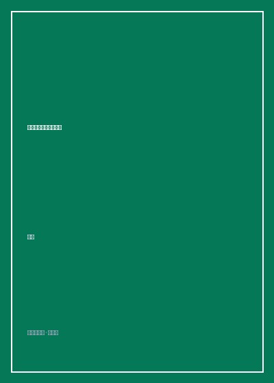

毫无代价唱最幸福的歌

8.8
★★★★★
豆瓣评分 · 13,600 人评价
香港殿堂级填词人黄伟文的词作手记与生活美学随笔，收录数十首经典粤语歌词背后的创作心声、潮流态度与时代唏嘘。
总体观点
《毫无代价唱最幸福的歌》是香港当代流行文化巨匠黄伟文（Wyman）的一部重量级创作手记与时代随笔集。作为与林夕并驾齐驱的粤语词坛双岳之一，黄伟文以其惊世骇俗的先锋敏锐、冷嘲热讽的幽默感与对尘世小人物的刻骨悲悯，彻底重构了华语流行曲的题材疆界。
全书不仅披露了《浮夸》《葡萄成熟时》《苦瓜》《喜帖街》《落花流水》等传世名曲诞生背后的真实故事与情感密码，更展现了作者作为‘时装精’与独立生活家的独特品位。书名取自容祖儿《我的骄傲》中的名句，既是黄伟文对‘自由表达’的不懈追求，也是他在光怪陆离的浮华都市中为世人写下的一曲深情安慰剂。
核心观点
-
1. 词作作为当代诗歌与时代心理的针灸术
流行歌词绝非廉价的风花雪月，而是直击时代群体隐秘痛点、为边缘个体发声的精神利器。
在谱写《浮夸》时，黄伟文将目光投向大都市中怀才不遇、拼命通过浮夸行径博取存在感的小人物，字字泣血直戳心扉。 -
2. 逆向审美的哲思：从苦涩中提炼人生的回甘
敢于在流行歌曲中赞颂世俗排斥的‘苦’与‘老’，将人生阅历转化为醇厚的精神营养。
创作《苦瓜》时，打破了情歌甜腻的传统，以半生之后方知苦瓜清甜为喻，写尽成年人在风霜洗礼后的释怀与成熟。 -
3. 时尚作为对抗平庸生活的盔甲与个人宣言
穿衣打扮不仅是外在修饰，更是一个人审美哲学、反叛意志与自由灵魂的具象延伸。
黄伟文回忆自己身穿先锋设计师怪诞裙装出席盛典，即便招致保守舆论嘲讽，也坚决捍卫自我表达的自由权利。 -
4. 城市记忆的拆迁与无可挽回的乡愁挽歌
随着推土机铲平老街老巷，流行歌曲承担起抢救城市集体记忆与平民市井温情的历史重任。
写下《喜帖街》记录利东街的拆毁，借由一对爱人搬离旧居的伤感，引发全港市民对老城风貌消逝的集体共鸣与反思。 -
5. 毫无代价唱最幸福的歌：艺术表达的终极自由
真正的幸福不是依附权贵或迎合市场，而是能够毫无顾忌、遵从本心唱出心底最纯粹的声音。
在红馆‘YY作品展’上六场座无虚席，满场群星与歌迷齐声合唱，黄伟文在台下热泪盈眶，见证文字跨越时光的奇迹。
全书结构
-
第一辑 时代曲手记：从《浮夸》到《葡萄成熟时》
披露陈奕迅、杨千嬅、容祖儿等天王天后经典成名曲的创作幕后，解析词作意象的构筑细节。
讲述在深夜录音棚外目睹陈奕迅录制《最佳损友》时几度哽咽，记录两个男人之间未说出口的深厚默契。 -
第二辑 友情与病榻：给密友的私房长信
记录与圈中挚友梅艳芳、张国荣、黄耀明等人的交往掌故，展现浮华娱乐圈背后真挚的人性温暖。
在张国荣离世数年后，黄伟文写下长文追忆哥哥当年在后台赠送自己一条珍贵大衣的细节，情深意切令人动容。 -
第三辑 潮流的偏执：时装精的穿搭与生活哲学
作者作为顶尖时尚评论家的专栏精选，畅谈巴黎时装周、川久保玲与高级时装背后的先锋精神。
在巴黎大皇宫秀场前排冷眼观察时尚名流的浮华嘴脸，以辛辣幽默的笔墨戳破奢侈品消费的虚荣泡沫。 -
第四辑 尘世的体温：小人物的卑微与不羁
将笔触伸向旺角街头的茶餐厅伙计、深水埗的旧书摊主与深宵的士司机，捕捉香港底层的烟火生命力。
写清晨五点兰桂坊散场后与扫街清洁工阿婶借火点烟，在平民对话中体会人间最真实的踏实感。 -
第五辑 毫无代价：填词人的终极独白与谢幕
回顾三十年写词生涯的心路历程，感谢世间所有的遇见与创痛，重申对文字与音乐的无悔深爱。
黄伟文在文末写道：只要世上还有一个人在失恋时从我的歌词里找到哭出来的勇气，我这一生就没有白活。